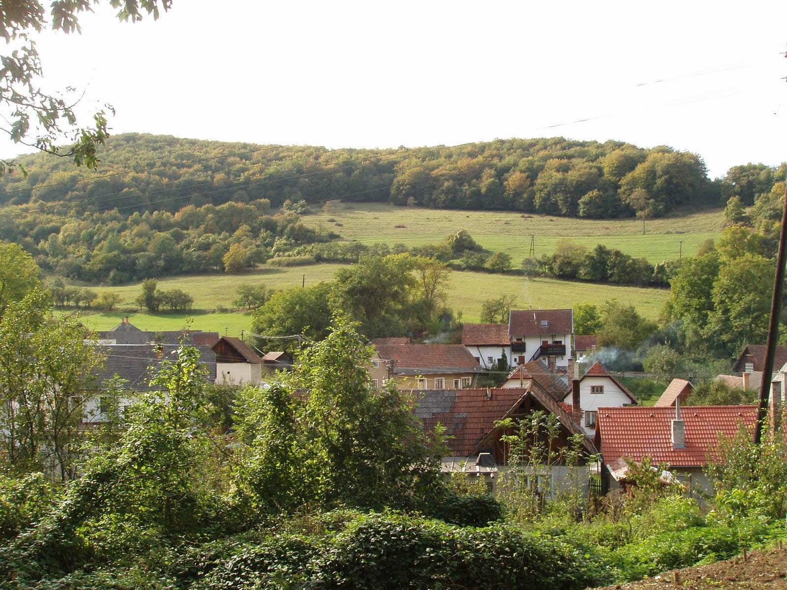
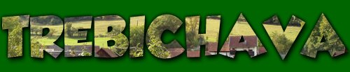
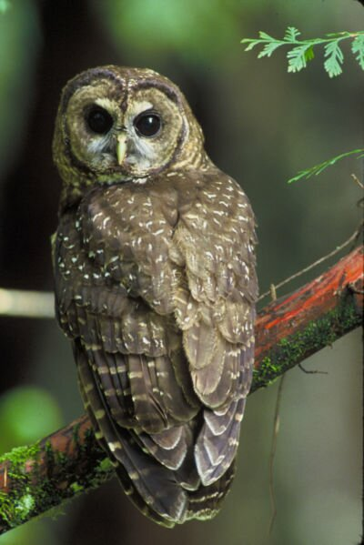

" Prapredkov mojich dávny rod
náhodou zablúdil sem,
objaviac číry prameň vôd,
prácou rúk zúrodnil zem. "
Víta Vás na svojich stránkach obec

Obec Trebichava leží na južnom výbežku Strážovskej hornatiny, v bočnom údolí Trebichavského potoka ,
20 km na severovýchod od Bánoviec nad Bebravou. Je jedinou obcou mikroregiónu Podhorie, ktorou nepreteká rieka Bebrava. Obec sa nachádza v nadmorskej výške 340 m n. m.
História:
Trebichava bola založená na zákupnom práve a v listinách sa po prvý krát spomína v roku 1396.
Trebichava pôvodne patrila k Beckovskému, neskôr k Uhrovskému panstvu. Boli tu panské majere a lomy na menej kvalitný mramor. V 19. storočí tu bola postavená pálenica. Pre prvú polovicu 20. storočia je typický rozvoj ovocinárstva so sušením ovocia v sušiarňach. Obec charakterizuje potočná ulicová zástavba.

Pamiatky:
Nad obcou sa týči klasicistická zvonica zo začiatku 19. storočia, ktorej zvon je pamiatkovo chránený.
V obci sa dodnes zachovali tradičné sušiarne ovocia. Jedna z nich, asi storočná, bola zrekonštruovaná.

Príroda:
Na katastrálnom území obce sa nachádza prírodná rezervácia Kňaží stôl. Jej bohatstvo rastlinstva, medzi ktorým je zastúpených veľa liečivých rastlín a chránených druhov je veľ ké, avšak doposiaľ málo preskúmané.
